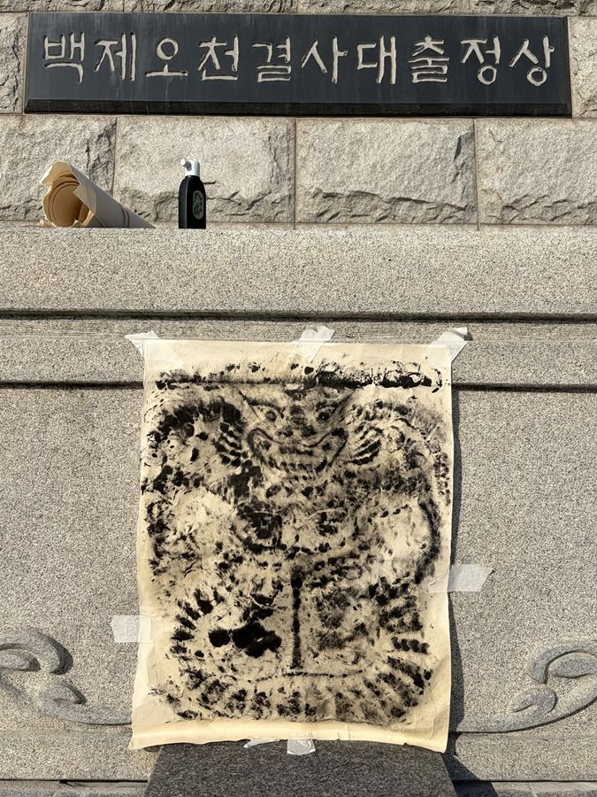
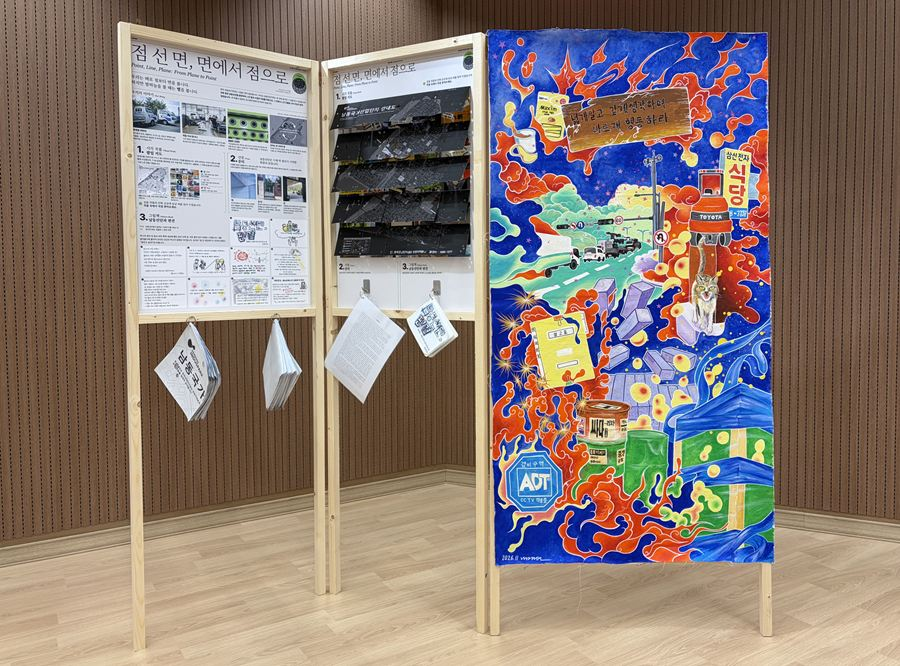
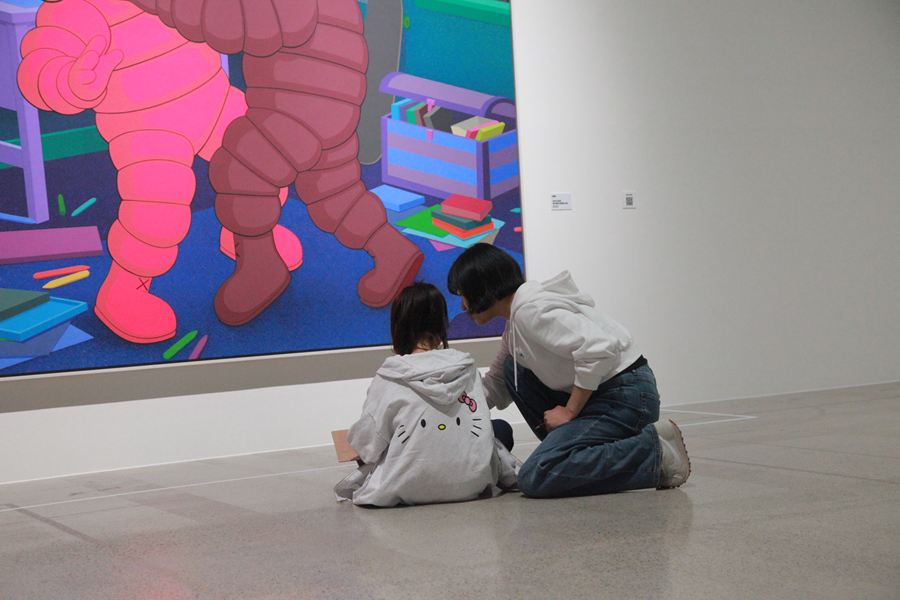
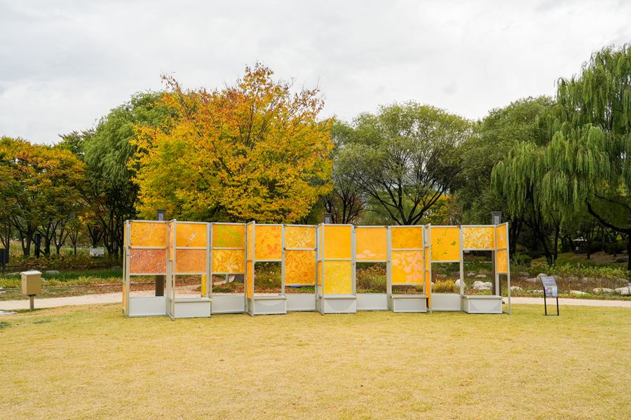
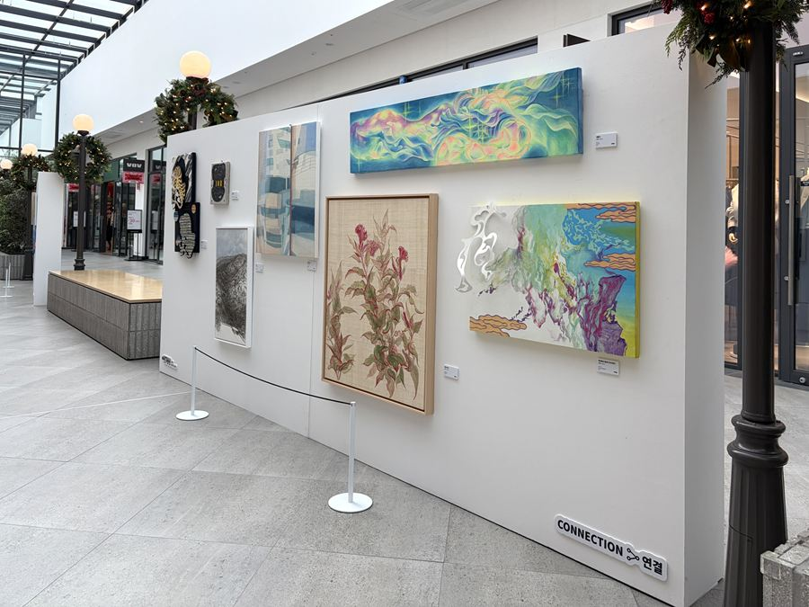
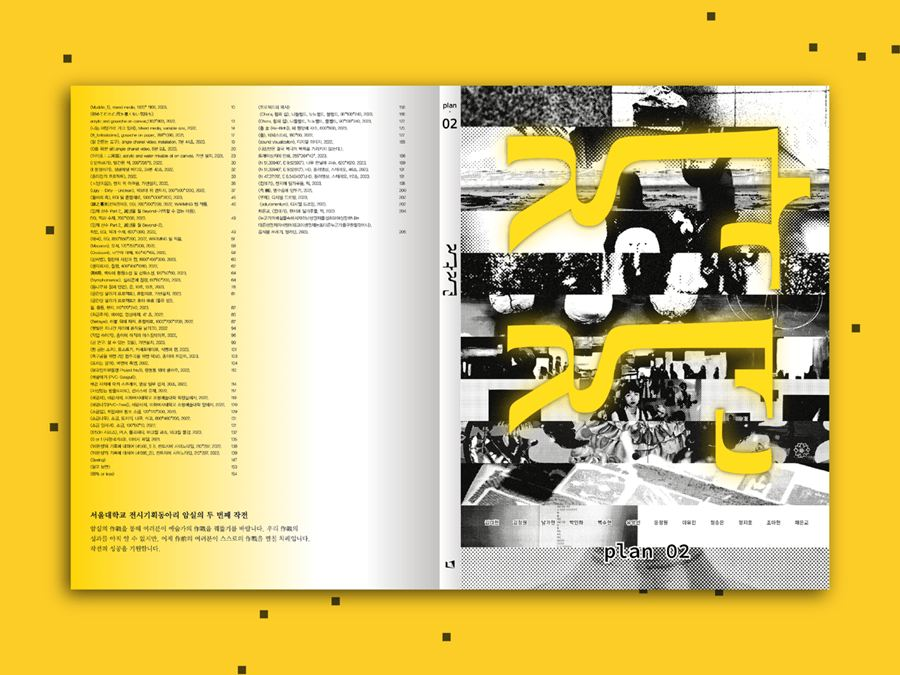
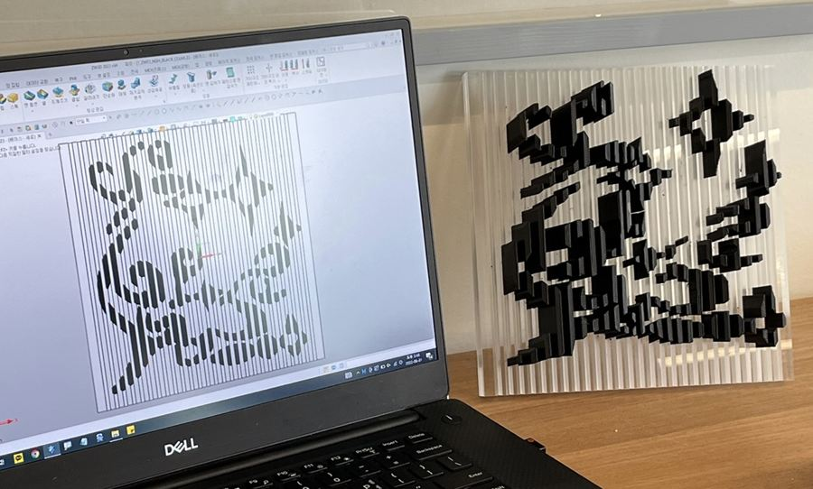

에디터·기자단Editor & Press2026
스펙타클 객원 에디터
스펙타클
객원 에디터
에디터·기자단Editor & Press2026
남동샘터 15기 남동구 블로그 기자단
인천 남동구
블로그 기자단
서포터즈·홍보단Supporters2026
스페이스K 서울 서포터즈 4기
스페이스K 서울
서포터즈

레지던시·교육Residency & Education2026.9.28–10.25
여흥민씨고택 「청년 예술인 in 부여」
부여군, 백제문화재단
두지역살이 프로젝트 참여 작가
자세히 보기View →

수상·장학·대회Awards & Competitions2026
2026 남동산단 청년 콘텐츠 해커톤 「관계자 외 출입환영」, 1등
인천가톨릭대학교 앵커사업추진단, 인천 스펙타클
1등
자세히 보기View →
도시기록·리서치Research & Archive2026
예술인 해외 리서칭 탐방 「‘너도나도’ ep2.싱가포르」
인천문화재단
해외 리서칭 탐방
수상·장학·대회Awards & Competitions2026
결맞음 미술공모전 나비 특별상
양자나노과학연구단(QNS)
나비 특별상 수상

레지던시·교육Residency & Education2026
전시 연계 프로그램 기획 및 진행
스페이스K 서울
전시 연계 프로그램 기획·진행 참여
자세히 보기View →

공공미술·선정Public Art & Selection2026
평화문화진지 일대 공공미술 프로젝트
서울특별시
공모 당선작 「지란지교」 · 연계 프로그램 진행
프로젝트 보기Project →
에디터·기자단Editor & Press2025
스택 객원 에디터: 태기즈 1기
스택
객원 에디터
서포터즈·홍보단Supporters2025
트라이보울로 (트라이보울 SNS 홍보단)
트라이보울
SNS 홍보단
서포터즈·홍보단Supporters2025
스페이스K 서울 서포터즈 3기
스페이스K 서울
서포터즈

공공미술·선정Public Art & Selection2025
아트.T 인천 일상생활공간 미술 프로젝트
인천문화재단
선정 작가
프로젝트 보기Project →

도시기록·리서치Research & Archive2025
인천-칭다오 탁본 프로젝트
인천광역시 · 한중 청년 공동 도시기록 ‘너의 도시, 나의 도시(너도나도)’
기획·탁본·번역 참여, 4인 팀 작업
프로젝트 보기Project →
도시기록·리서치Research & Archive2024
부평 대백과사전 1기 편찬러
편찬러

인터뷰Interview2023
전시기획동아리 ‘암실’ 작가 인터뷰
전시기획동아리 암실
작가 인터뷰
자세히 보기View →
인터뷰Interview2023
Dear.A 디어에이 매거진: Interview with A
Dear.A 매거진
작가 인터뷰
수상·장학·대회Awards & Competitions2023
제4회 오픈갤러리X웰투시드림재단 장학생 선발
오픈갤러리 · 웰투시드림재단
장학생
레지던시·교육Residency & Education2023
윤슬바다학교 2기 창작 레지던시
경기문화재단
28시간(1박 2일) 창작 레지던시 ‘윤슬러’
서포터즈·홍보단Supporters2022
그라운드시소 성수: 비비안 마이어 사진전 콘텐츠 서포터즈
그라운드시소 성수
콘텐츠 서포터즈
서포터즈·홍보단Supporters2022
제68회 백제문화제 서포터즈
백제문화제
서포터즈

서포터즈·홍보단Supporters2022
ZW3D-ZW 프렌즈 2기
ZW3D
서포터즈
자세히 보기View →
수상·장학·대회Awards & Competitions2022
해운대 모래축제: 아마추어 모래조각 경연대회
해운대구
참가
서포터즈·홍보단Supporters2022
전통문화 알리미 코드 서포터즈 1기
서포터즈
레지던시·교육Residency & Education2022
인천공항 가치점프 2기 장학샘
인천공항
초등 교육 진행
수상·장학·대회Awards & Competitions2022
한국의류학회 2022 패션상품기획 콘테스트 장려상
사단법인 한국의류학회
장려상
레지던시·교육Residency & Education2021
2021 아시아프 14기 SAM (학생 아트 매니저)
아시아프
학생 아트 매니저